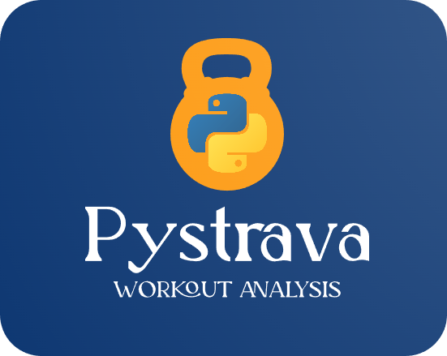
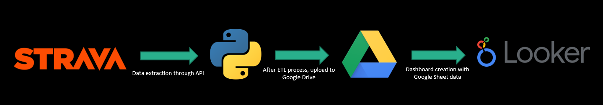
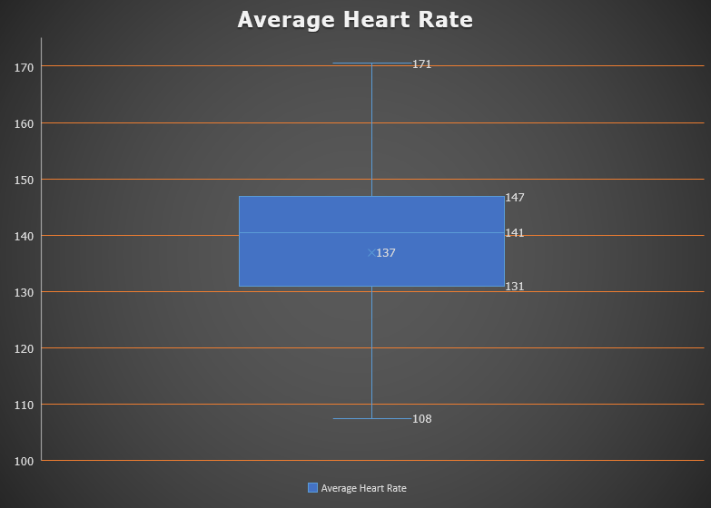
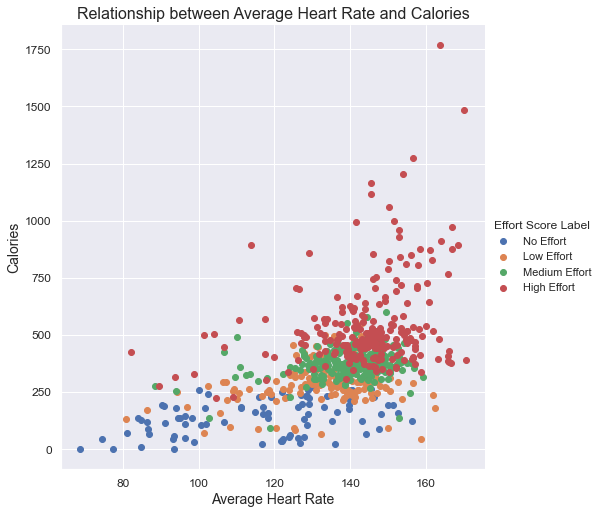

PyStrava
Introduction
In 2020, during the pandemic, I bought a Garmin smartwatch to prioritize my health and monitor workouts. A digital record of progress motivated me to stay disciplined. After working out consistently for three years, I realized the potential of my accumulated data.
Fueled by curiosity, I explored options, shifting from Garmin's API to Strava's due to compatibility. Strava, akin to a fitness-oriented Facebook, held my Garmin-recorded workouts.
Seeking personalized insights, I crafted a Workout Statistics dashboard and a Workout Effort Score, using variables like heart rate, calories, etc. Likewise I created a K-Nearest Neighbors Machine Learning model to classify each work with its corresponding level of effort.
Project Overview — How it Works
The foundation of this project is built upon an ETL (extract, trasnform, load) pipeline. It begins by extracting workouts from Strava using their API, then we format the data in Python and next we upload it to a Google Sheet in Google Drive. Finally, the Google Looker dashboard is connected to the dataset, enabling the display of insightful statistics.
Effort Score
For the custom Workout Effort Score I use the information collected by my Garmin smartwatch, such as heart rate, distance run and calories burned. From there I establish different ranges (bins) based on the minimum, maximum, quartiles, and outliers of each variable.
Points are then assigned depending on the specific bin in which each variable falls. For instance, let’s focus on the average heart rate variable. Since a higher average heart rate signifies a more intense workout, we establish the following point ranges:
- 100: 5 points
- 100-130: 10 points
- 130-145: 15 points
- 145-155: 20 points
- 155-165: 30 points
- 165-170: 35 points
- Above 170: 40 points
After assigning a scoring system to each variable, we calculate the sum of each column and store it on a new variable called “Effort Score”. Depending on the Effort Score, we determine the level of effort as follows:
- 0-100: No Effort
- 100-125: Low Effort
- 125-150: Medium Effort
- 150 or above: High Effort
Once each workout is assigned its respective level of effort we can visualize the relationship between variables like so:
As we can see in the graph, the higher the average rate, the more calories are burned, therefore, more effort is required.
Machine Learning Model - K - K-Nearest Neighbors
The K-Nearest Neighbor model is a great tool to categorize events to a specific label/class and it works best with relatively small datasets. Likewise it is robust against outliers as it makes predictions based on similarity of nearby data points. In this project we use it to predict the level of effort of workouts. To build this model I trained it using my own workout data, where 80% of the dataset was used for training and 20% for testing/predicting. It has shown a good level of accuracy, achieving 86% correctness in classifying instances. Of course, there is always room for improvement and the more workouts I log, the better it will perform.
Model Strengths and Weaknesses
Strenghts:
- The model demonstrates high accuracy in labeling High and Medium effort workouts.
- Overall, the model achieves an accuracy rate of 86%, indicating its effectiveness in correctly classifying workout effort levels